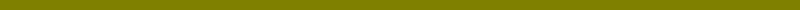

|
|||||||||||||
|  | |||||||||||||

Las setas son únicamente la parte reproductiva de los hongos. Estos generalmente crecen bajo tierra y no son visibles, por lo que a lo largo de la historia han inspirado multitud de leyendas. Y no es para menos, ya que estos extraños seres cada día asombran a los científicos con nuevas propiedades. Tienen tantas diferencias con el resto de los seres vivos que la tendencia actual de la Biología es agruparlos en un reino para ellos solos: el Reino Fungi. No pretendemos hacer us estudio completo sobre la riqueza micológica de Maderuelo por lo que únicamente nos referiremos a los hongos más conocidos por la mayoría de los habitantes de la zona y algunos otros destacables por su curiosidad.
|
|
|